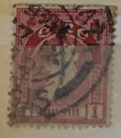
| SOURCE | TITLE| IMAGE MATCH | click to source page |
| eBay | 1925 Russia USSR Sc#302b 10 1/2 LENIN USED 1927 VF | eBay | 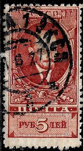 |
| eBay | Used Error, Variety Stamps for sale | eBay | 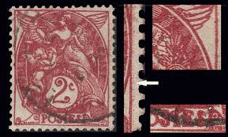 |
| Haiti Philatelic Society | HPS - Auction | 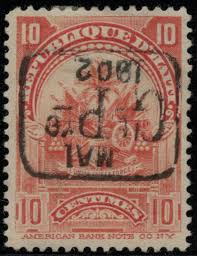 |
| tenes.com.sg | 1857 US Stamp Scott #10 Fancy cancel RED 3 cent 3c Washington Type II Impref #40 | 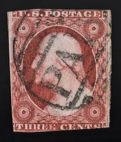 |
| Stamp Community Forum | Errors And Oddities On Precancels (Double Overprint With 2 Types, Inking Issues) - Stamp Community Forum | 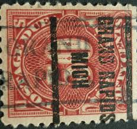 |
| eBay | 5 CENTAVOS CHILE 1900 SURCHARGE OVPT STAMPS PAIR ( MY REF CHILE A) | eBay | 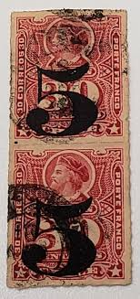 |
| Alamy | 5kr hi-res stock photography and images - Alamy | 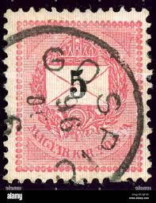 |
| mercator.direct | GB QUEEN VICTORIA 1873, 3d ROSE Pl.17, Mi.41, SG143, J-O/O-J, Used | 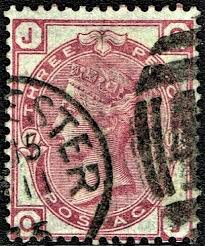 |
| eBay | C Puerto Rico US Possessions Stamps for sale | eBay | 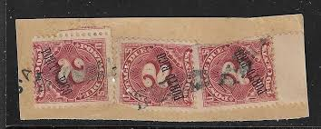 |
| Blogger.com | Heritage of India stamps site: USSR Russia stamps collection | 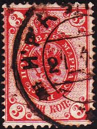 |
| HipStamp | Austria - 1908 - Scott #116 - used - Franz I | Europe - Austria, General Issue Stamp / HipStamp | 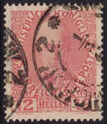 |
| John Kinnard Stamps | SG 51 Three Half Pence Plate 1 Error Of Lettering Very Scarce Letters OP PC - John Kinnard Stamps | 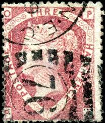 |
| eBay | 1862 3d pale carmine rose struck by a Melksham numeral 521 (40) | eBay | 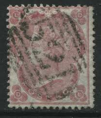 |
| eBay | Surinam VierkantCANC FERRIJDIENST NVPH 46 | eBay | 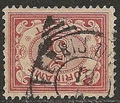 |
| Michael-Hamilton.com | Michael-Hamilton.com - West indies and British Africa stamps, covers and postmarks | 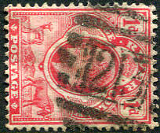 |
| eBay | F/VF (Fine/Very Fine) Great Britain Victoria Surface-Printed Stamps for sale | eBay | 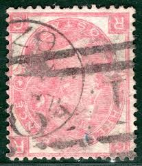 |
| eBay | Russia 1917 Bolshevik Revolution Cavalry stamp 1928 RU1 | eBay | 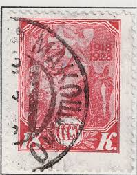 |
| Alamy | Alfred kubin work of art hi-res stock photography and images - Alamy | 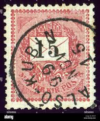 |
| eBay | GERMANY 181 - Numeral and Post Horn "1921 Carmine and Pale Rose" (pc13477) | eBay | 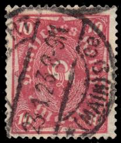 |
| eBay | GB Scott 80 used. 050820221059 | eBay | 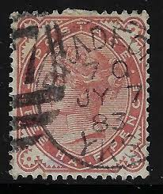 |
| eBay | Travelstamps: Germany Bavaria Bayern Stamps - 10pf Used Handstamped | eBay | 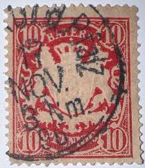 |
| eBay | VICTORIA BARRED NUMERAL CANCEL - 748 REDHILL - GVX | eBay | 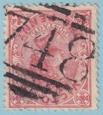 |
| lbdphilately.com | Description | 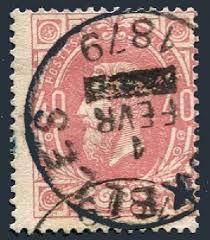 |
| eBay | U.S. Used Stamp Scott #J15 1c Postage Due. Lovely CDS Cancel. Choice! | eBay | 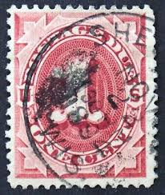 |
| eBay | QV GReat BRitaiN 1873 - 1876 (oR 1880 - 1881) 3P * QueeN ViCtORiA * ROSE | eBay | 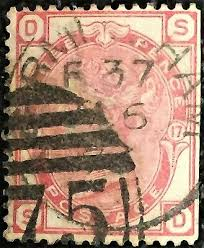 |
| eBay | French Colonies stamps 1881 YV 58 TOURANNE / ANNAM VF | eBay | 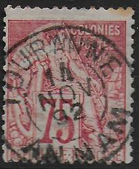 |
| eBay | Great Britain 1873 stamps definitive USED SG 143 CV $97.50 170708071 | eBay | 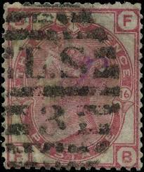 |
| Etsy | Queen Victoria Stamp, 3d Three Pence Stamp, 1865/7 Hinged - Crafts Antique Stamps, Philately - Etsy | 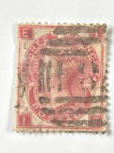 |
| eBay | Great Britain Scott #49 Plate #7 Used Margin Clear of Design on all 4 Sides | eBay | 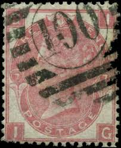 |
| HipStamp | Browse Listings in United States / HipStamp | 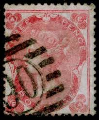 |
| eBay | Great Britain GB QV Queen Victoria 1872 3d Rose Plate 5 - Town 49 Strike | eBay | 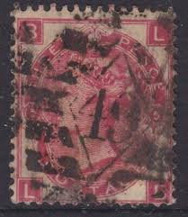 |
| eBay | GB QV Stamp SG.167 1½d Venetian Red (1880) Used Cat £60 {samwells}SBR159 | eBay | 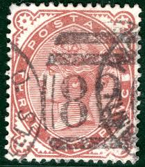 |
| eBay | GREAT BRITAIN SG-103, SCOTT # 49, USED, PLATE # 8, GREAT PRICE! | eBay | 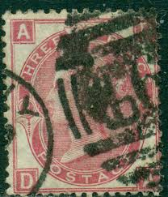 |
| HipStamp | Listings from 'ozzy1' in Australia & Oceania / HipStamp | 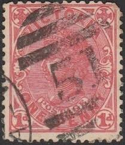 |
| eBay | Luxembourg Scott # 92 VF Used 1908 2½ Franc Grand Duke William IV | eBay | 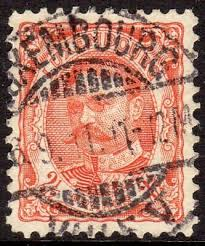 |
| Stamp Community Forum | Victoria - Help With Barred Numeral Cancels Pls! - Stamp Community Forum | 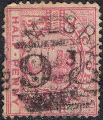 |
| John Kinnard Stamps | John Kinnard Stamps – SG 48 Half Penny Bantam Plate 10 Fine Used Pair Letters RB SB | 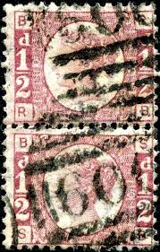 |
| eBay | 1876-83 AUSTRIA🔥Sc#7E M#3 IIA/ STEAMSHIP seal "È ARRIVATA IL VAPORE LEVANTE"🔥 | eBay | 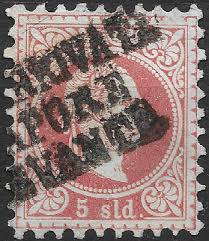 |
| b1d.com | SG. 103wi. J30c. " PF " 3d Rose plate 5. INVERTED WATERMARK. A good used B89983 | 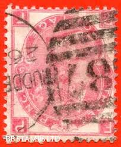 |
| Notando.is | NUMERAL CANCELS | stampauction.is | 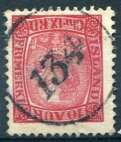 |
| eBay | VICTORIA BARRED NUMERAL CANCEL - 1793 GLENLEE - PUO | eBay | 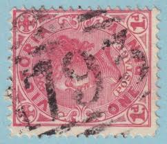 |
| eBay | Russia Red Army Cavalry stamp 1928 Perm Railroad postmark RU | eBay | 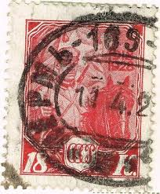 |
| eBay | CHILE SOFICH # 27 CHILLAN CANCEL VERY NICE! | eBay | 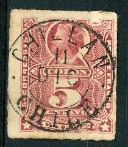 |
| eBay | AUSTRIA 1867 - 1874 / # 49 - IMPERF TO IDENTIFY / USED / MAG 6 | eBay | 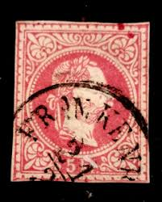 |
| eBay | CHILE - COLUMBUS Sc 22, Unknown cancellation | eBay | 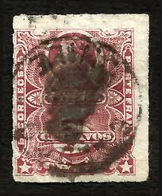 |
| Finumas Filatelia y Numismática | Elizabeth II stamps - dater and wallet wheel 1856 | Finumas.co.uk | 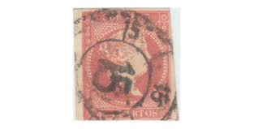 |
| eBay | VIC Victoria Australia QV 1d Town 722 CANTERBURY | eBay | 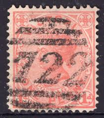 |
| eBay | QV GReat BRitaiN 1865 3P * QueeN ViCtORiA 3 PENCE ^PeRfORAted * *O/C ROSE | eBay | 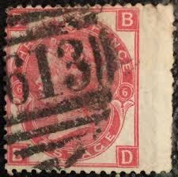 |
| eBay | QV GReat BRitaiN 1865 3P * QueeN ViCtORiA 3 PENCE ^PeRfORAted * *O/C ROSE | eBay | 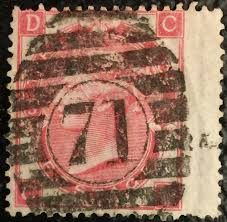 |
| eBay | ÖSTERREICH 1867 5kr, PLAN (B) Kl:45P! Schön! | eBay | |
| Michael-Hamilton.com | Michael-Hamilton.com - West indies and British Africa stamps, covers and postmarks | |
| eBay | GREAT BRITIAN , 1911 , GEORGE V , 1p STAMP , PERF , USED | eBay | |
| eBay | Wallis & Futuna C29,MNH.Michel 216. Samuel Wallis Ship 1967. | eBay | |
| eBay | ÖSTERREICH 1867 5kr, HAFENSTEMPEL SCHIFFS POSTAMT 4/SEBENICO (Dalmatien) Kl:180P | eBay | |
| Stamp Community Forum | Scott US #220 Supplementary Mail Type F - Stamp Community Forum | |
| eBay UK | Saxon German & Colonies Stamps for sale | eBay UK | |
| On the Ridge Stamps | Classic Stamps of Austria & Lombardy Venetia - On the Ridge Stamps – Page 8 | |
| eBay | GB QV 1865 SG101 1 Green PLATE 4 USED Cat BG | eBay | |
| - UK INVESTMENT STAMPS - | Great Britain Queen Victoria 1840 1d Penny Blacks 2d Blue - Line Engraved Postage stamps | |
| eBay | Great Britain #37, Used - 4 margins with circular date stamp. 2019 SCV $675.00 | eBay |